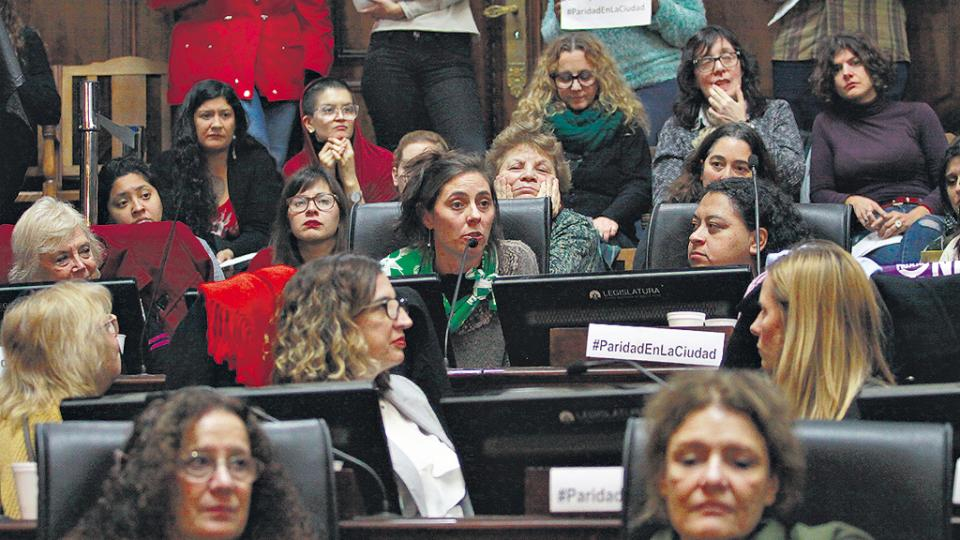

Para el que quiera bajarse antes de entrar en mareos, se advierte que este artículo puede resultar un aporte a la confusión electoral. Clarín recopiló en las últimas horas siete encuestas y análisis en la provincia de Buenos Aires para ver qué dicen sobre los indecisos, el grupo más buscando en el sprint hacia las PASO. Las diferencias son sorprendentes, incluso dentro de un mismo informe. Pero no (o no sólo) por el tamiz subjetivo de los encuestadores, sino porque los mismos consultados se muestran firmes en su elección cuando se les pregunta de una manera y dudan si se los interroga de otra.
el 97 por ciento de las listas respete la inclusión del 30 por ciento de mujeres y la alternancia en las candidaturas, por el modo en que la aplican los partidos políticos, y el control deficiente que la justicia electoral hace de su aplicación, la ley que debe promover la participación política de las mujeres, en realidad, la limita. El panorama de las 401 listas de todo el país indica que, a pesar de que sólo un 3 por ciento de esas listas incumplió el requisito del 30 por ciento, la inclusión de mujeres es escasa y suele limitarse a con él pero no a superarlo. Aunque pasaron más de 25 años desde la sanción de la ley de cupo, el relevamiento de lo que sucede con las listas de las Primarias Abiertas, Simultáneas y Obligatorias (PASO) demuestra que “el compromiso con la igualdad aún no está plenamente presente en los partidos políticos, y que estas acciones afirmativas siguen siendo necesarias”, advirtió el relevamiento sobre la aplicación de la Ley de cupo femenino realizado por la Asociación de Defensores del Pueblo de la República Argentina (Adpra), el Consejo Nacional de las Mujeres (CNM), el Equipo Latinoamericano de Justicia y Género (ELA), la Comisión Argentina para los Refugiados y Migrantes (Caref), Mujeres en Igualdad (MEI) y la Fundación Siglo 21.
